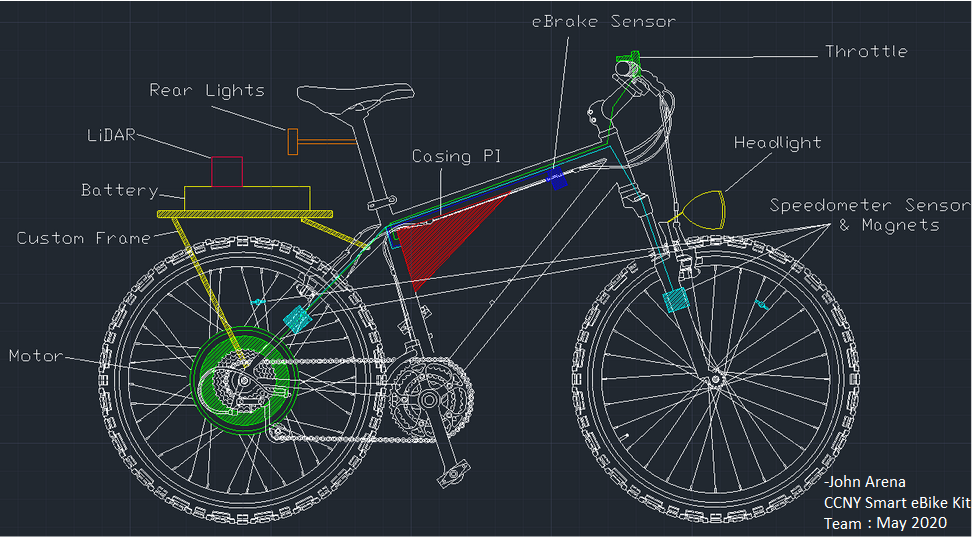

Smart eBike Kit
Description
For my Senior Capstone, I lead and managed a team of 4 to design a Smart eBike Kit. This would be a product that can be sold on the market that would allow you to transform a mountain bike into an eBike. An eBike is an electronic bicycle, which generally consists of a battery and a motor. Our kit will have this, but also a smartphone application that communicates with the various modules, and an object detection system using LiDAR.
Software and Hardware
The Design

Functional Block Diagram